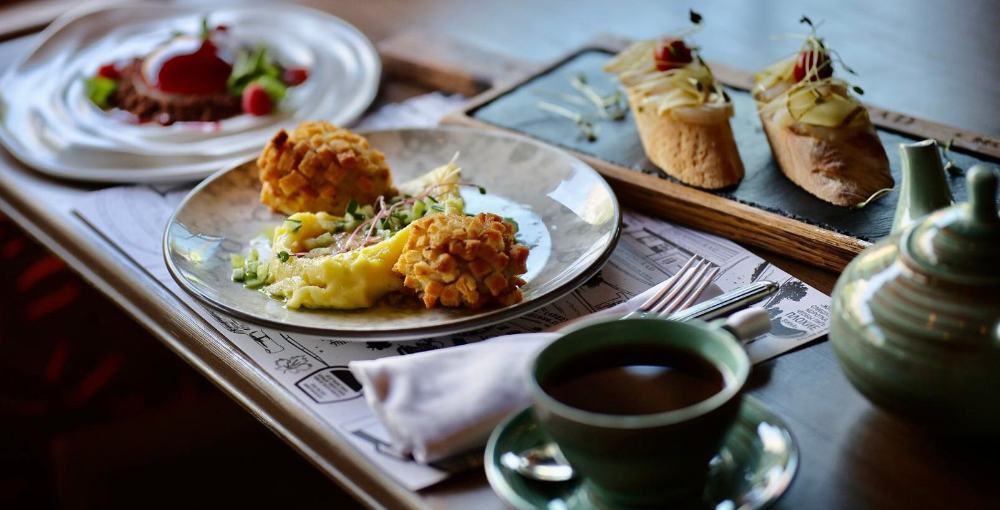

Туристический портал Тверской области
Главная
Государева дорога
Анонс недели
Путеводители

Гастрономическое путешествие
Узнай вкусы тверской кухни
Узнать
Где поесть
Сувениры
Где остановиться
Экотуризм
Экскурсии и туры
Гиды
Интерактивная карта
Скачай свой маршрут поездки!
Скачать
События
Достопримечательности
Обратная связь